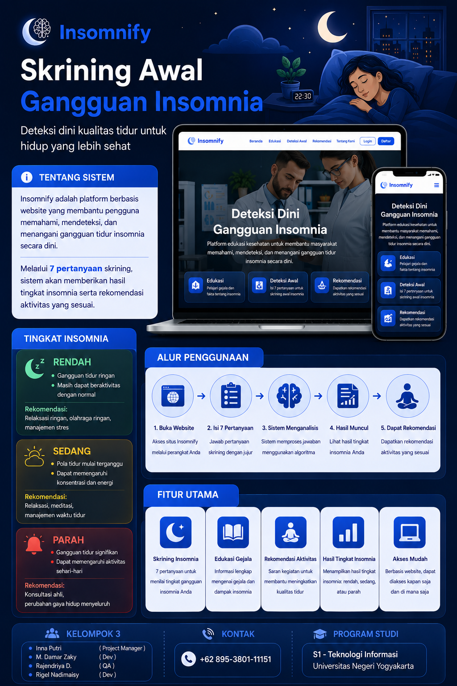
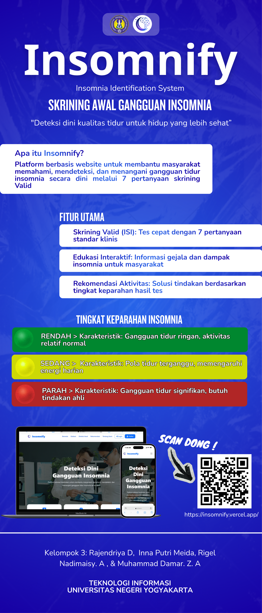
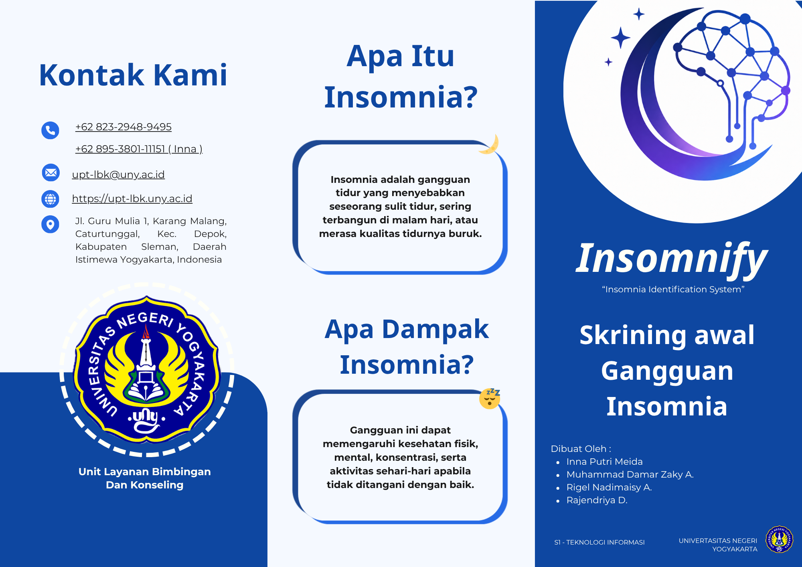
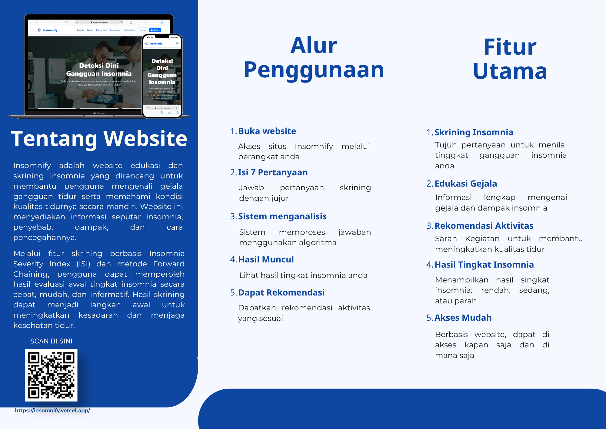

01 / Informasi Sistem
Tentang Project
Mengenal Lebih Dekat INSOMNIFY
INSOMNIFY hadir sebagai respons nyata atas meningkatnya prevalensi gangguan tidur di masyarakat modern yang sering kali diabaikan. Melalui integrasi ilmu kesehatan dan teknologi kecerdasan buatan, sistem pakar ini melakukan pelacakan penalaran maju secara sistematis untuk menarik kesimpulan diagnosis awal berdasarkan indikasi atau gejala klinis tidur yang dirasakan pengguna.
Forward Chaining
Metode Sistem Pakar
Responsive Web
Arsitektur Platform
2026
Tahun Pengembangan
02 / Profil Anggota
Tim Pengembang
03 / Karya Pameran
Luaran Capstone Project
Poster

Banner


Leaflet


*Klik pada masing-masing halaman untuk memperbesar
Rasakan Langsung Pengalaman Deteksi
Buka platform utama INSOMNIFY sekarang untuk menguji fungsionalitas sistem pakar kami secara real-time.
Kunjungi Website Utama INSOMNIFY